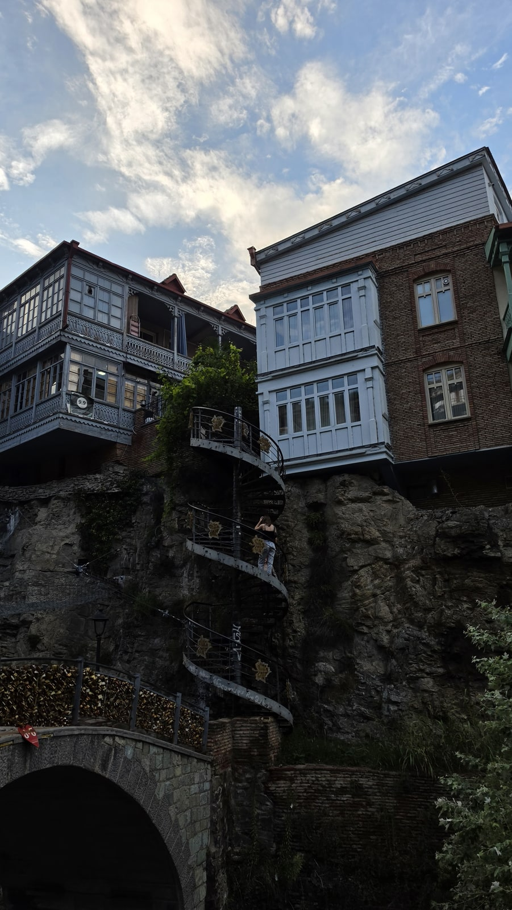
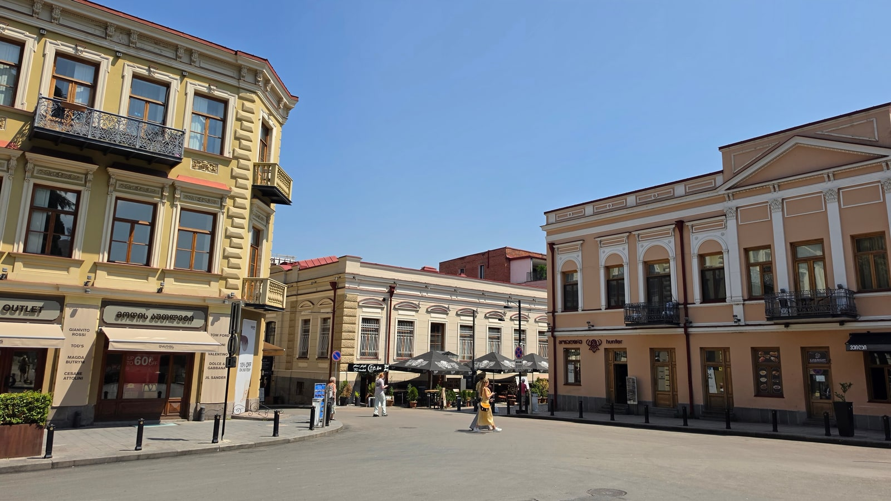

<meta charset="utf-8">
<title>트빌리시 숙소 지역 비교 — 제가 묵은 곳은 중앙역 근처 — 나의 투자 그리고 행복한 여행</title>
<meta name="description" content="트빌리시 숙소 지역 7곳 비교와 중앙역 근처 에어비앤비(1박 약 65,000원) 실제 숙박 기록. 지하철 접근성·언덕·소음 기준.">
<meta name="viewport" content="width=device-width, initial-scale=1">
<link rel="canonical" href="https://worldtraveler1.tistory.com/57">
<link rel="preconnect" href="https://fonts.googleapis.com">
<link rel="preconnect" href="https://fonts.gstatic.com" crossorigin>
<link rel="stylesheet" href="https://fonts.googleapis.com/css2?family=Hahmlet:wght@400;600;800&family=IBM+Plex+Mono:wght@400;500&family=IBM+Plex+Sans+KR:wght@300;400;500;600&display=swap">

<style>
  :root{
    --paper:#F2EEE6;--surface:#FAF8F3;--surface-2:#E7E1D5;
    --ink:#191510;--ink-2:#4A4235;--ink-3:#7D7364;
    --line:#D6CEBF;--line-soft:#E4DDD0;--accent:#B06A15;--accent-bright:#C2761A;
    --up:#E5484D;--down:#3B82F6;
    --f-display:"Hahmlet",'Nanum Myeongjo',"Apple SD Gothic Neo",serif;
    --f-body:"IBM Plex Sans KR","Apple SD Gothic Neo","Malgun Gothic",sans-serif;
    --f-mono:"IBM Plex Mono","SFMono-Regular",Consolas,monospace;
    --pad:clamp(20px,5vw,64px);
  }
  @media (prefers-color-scheme:dark){
    :root:not([data-theme="light"]){
      --paper:#0B1120;--surface:#121A2C;--surface-2:#1A2439;
      --ink:#E9EEF7;--ink-2:#A9B5C9;--ink-3:#72809A;
      --line:#26314A;--line-soft:#1D2739;--accent:#E8A33D;--accent-bright:#F0B45C;
    }
  }
  *{box-sizing:border-box;}
  body{margin:0;background:var(--paper);color:var(--ink);font-family:var(--f-body);
    font-weight:300;font-size:1rem;line-height:1.75;-webkit-font-smoothing:antialiased;}
  a{color:inherit;}
  img{max-width:100%;height:auto;}
  .wrap{max-width:760px;margin:0 auto;padding-inline:var(--pad);}
  .nav{position:sticky;top:0;z-index:20;background:color-mix(in srgb,var(--paper) 88%,transparent);
    backdrop-filter:saturate(180%) blur(12px);border-bottom:1px solid var(--line);}
  .nav-in{display:flex;align-items:center;justify-content:space-between;height:58px;}
  .brand{font-family:var(--f-display);font-weight:600;font-size:1rem;letter-spacing:-.02em;text-decoration:none;}
  .back{font-family:var(--f-mono);font-size:.72rem;color:var(--ink-3);text-decoration:none;}
  .article{padding-block:clamp(40px,7vw,72px) clamp(56px,9vw,96px);}
  .eyebrow{font-family:var(--f-mono);font-size:.68rem;letter-spacing:.16em;text-transform:uppercase;
    color:var(--accent);margin:0 0 14px;}
  h1{font-family:var(--f-display);font-weight:800;font-size:clamp(1.6rem,4.4vw,2.3rem);
    line-height:1.3;letter-spacing:-.03em;margin:0 0 16px;}
  .byline{font-family:var(--f-mono);font-size:.72rem;color:var(--ink-3);
    padding-bottom:24px;border-bottom:1px solid var(--line);margin-bottom:32px;}
  h2{font-family:var(--f-display);font-weight:600;font-size:1.25rem;letter-spacing:-.02em;margin:42px 0 14px;}
  h3{font-family:var(--f-display);font-weight:600;font-size:1.05rem;letter-spacing:-.02em;
    margin:30px 0 10px;padding-top:14px;border-top:1px solid var(--line-soft);}
  h3 .code{font-family:var(--f-mono);font-size:.7rem;font-weight:400;color:var(--ink-3);margin-left:6px;}
  p{margin:0 0 18px;color:var(--ink-2);}
  ul.checks{margin:0 0 18px;padding-left:20px;color:var(--ink-2);}
  ul.checks li{margin-bottom:8px;font-size:.94rem;}
  table{width:100%;border-collapse:collapse;font-size:.88rem;margin-bottom:8px;}
  th{font-family:var(--f-mono);font-size:.66rem;letter-spacing:.06em;text-transform:uppercase;
    color:var(--ink-3);text-align:right;padding:8px 6px;border-bottom:1px solid var(--line);}
  th:first-child{text-align:left;}
  td{padding:10px 6px;border-bottom:1px solid var(--line-soft);color:var(--ink-2);}
  td.num{font-family:var(--f-mono);text-align:right;font-variant-numeric:tabular-nums;}
  td.up{color:var(--up);} td.down{color:var(--down);}
  .scroll{overflow-x:auto;}
  figure{margin:22px 0;}
  figure img{display:block;border-radius:3px;background:var(--surface-2);}
  figcaption{margin-top:8px;font-family:var(--f-mono);font-size:.68rem;color:var(--ink-3);text-align:center;}
  .note{margin-top:34px;padding:16px 18px;border-left:3px solid var(--accent);
    background:var(--surface);border-radius:0 3px 3px 0;}
  .note p{margin:0;font-size:.85rem;color:var(--ink-3);}
  .foot{border-top:1px solid var(--line);background:var(--surface);padding-block:30px 38px;}
  .foot p{margin:0;font-size:.8rem;color:var(--ink-3);}
</style>

<nav class="nav">
  <div class="wrap nav-in">
    <a class="brand" href="../index.html">나의 투자 그리고 행복한 여행</a>
    <a class="back" href="../index.html#stocks">← 시황으로</a>
  </div>
</nav>

<main class="wrap article">
  <p class="eyebrow">Market</p>
  <h1>트빌리시 숙소 지역 비교 — 구시가지·솔로라키·자유광장·아블라바리·역 주변</h1>
  <p class="byline">여행 · 2026-09-14 기준</p>

  <p>한 줄 요약: 걸어서 명소를 다니려면 구시가지·솔로라키, 가장 중심은 자유광장, 교통과 가성비는 중앙역 주변(제가 묵은 곳, 1박 약 65,000원)입니다.</p>
  <p>숙소 요금은 제가 낸 금액만 적었고, 지역 정보는 공개 자료와 지하철 노선 기준입니다.</p>
  <figure><figcaption>나리칼라 쪽에서 본 트빌리시 구시가지와 강 (2026.8.13 19:41 촬영)</figcaption></figure>
  <h2>7개 지역 한눈에 보기</h2>
  <ul class="checks">
    <li>구시가지 — 명소까지 걸어서 / 언덕·돌길, 저녁 식당가 소음</li>
    <li>솔로라키 — 옛 정취, 중심 바로 옆 / 므타츠민다 산비탈이라 오르막</li>
    <li>자유광장·루스타벨리 — 가장 중심, 지하철 두 역 / 큰길 소음, 2026년 루스타벨리 공사</li>
    <li>아블라바리 — 강 건너 구시가지 전망, 지하철역 / 명소 대부분이 강 건너</li>
    <li>마르자니쉬빌리 — 복원된 19세기 거리와 카페 / 구시가지까지 지하철 이동</li>
    <li>중앙역 주변(제가 묵은 곳) — 교통, 가성비 / 저녁 산책할 분위기는 아님</li>
    <li>바케 — 조용한 고급 주거지 / 지하철역 없음</li>
  </ul>
  <h2>제가 묵은 곳 — 중앙역 주변</h2>
  <figure><figcaption>중앙역 주변 숙소를 편하게 만들어 준 트빌리시 지하철 (2026.8.19 18:24 촬영)</figcaption></figure>
  <p>트빌리시 중앙역 근처 에어비앤비 아파트에 묵었습니다. 1박 약 65,000원, 새로 지은 건물이라 아주 깔끔했습니다.</p>
  <ul class="checks">
    <li>지하철 두 노선이 만나는 스테이션 스퀘어역 — 구시가지까지 10~15분</li>
    <li>리버티 스퀘어(자유광장)까지 세 정거장</li>
    <li>공항 337번 버스 노선이 가깝습니다. 출국 날 1라리, 40~50분에 공항까지 갔습니다</li>
    <li>카즈베기·카헤티·아르메니아 투어 세 번을 다니기에 무리가 없었습니다</li>
  </ul>
  <div class="note"><p>단점은 분명합니다. 역 주변은 교통 중심지라 저녁에 산책하며 분위기를 즐길 동네는 아닙니다. 구시가지 야경을 보고 지하철로 돌아오는 생활이 됩니다.</p></div>
  <h2>1. 구시가지 — 걸어서 다 보고 싶다면</h2>
  <figure><figcaption>구시가지의 나무 발코니 집들 (2026.8.13 18:54 촬영)</figcaption></figure>
  <p>온천 거리, 나리칼라, 평화의 다리, 나무 발코니 골목이 다 여기 있습니다. 노을을 보고 걸어서 숙소로 돌아올 수 있습니다.</p>
  <ul class="checks">
    <li>장점 — 대부분의 명소가 도보 거리, 저녁 분위기가 바로 문 앞</li>
    <li>단점 — 가파른 돌길과 계단, 저녁 식당가의 소음. 조용한 골목 쪽 방인지, 계단이 몇 개인지 확인하세요</li>
  </ul>
  <h2>2. 솔로라키 — 중심 옆 옛 동네</h2>
  <p>자유광장 바로 위, 므타츠민다 산비탈을 따라 올라가는 동네입니다. 19세기에 조성된 옛 주택가라 분위기가 있고 중심과 구시가지가 가깝습니다.</p>
  <ul class="checks">
    <li>장점 — 중심 접근성, 옛 정취, 명소까지 도보</li>
    <li>단점 — 산비탈이라 숙소로 돌아갈 때 오르막</li>
  </ul>
  <h2>3. 자유광장·루스타벨리 — 가장 중심</h2>
  <figure><figcaption>밤의 자유광장 (2026.8.13 21:13 촬영)</figcaption></figure>
  <p>구시가지와 트빌리시 중심 대로 루스타벨리 사이에 있습니다. 리버티 스퀘어역과 루스타벨리역이 가깝고, 공항 337번 노선도 지나갑니다.</p>
  <ul class="checks">
    <li>장점 — 언덕이 덜하고 지하철·공항 버스가 가까움</li>
    <li>단점 — 큰길 소음. 2026년 7월부터 약 4개월간 루스타벨리 대로 공사 통제가 있으니 숙소 근처가 공사 구간인지 확인하세요</li>
  </ul>
  <h2>4. 아블라바리 — 강 건너에서 보는 구시가지</h2>
  <figure><figcaption>아블라바리 쪽 절벽 위의 메테히 교회 (2026.8.13 19:07 촬영)</figcaption></figure>
  <p>강 왼쪽, 구시가지 맞은편입니다. 메테히 교회, 리케 공원, 거대한 성 삼위일체 대성당(사메바)이 이쪽에 있고 아블라바리역이 있습니다.</p>
  <ul class="checks">
    <li>장점 — 구시가지 전망, 리케 공원 케이블카가 가까움, 지하철역</li>
    <li>단점 — 명소 대부분이 강 건너, 일부는 언덕</li>
  </ul>
  <h2>5. 마르자니쉬빌리 — 복원된 19세기 거리</h2>
  <figure><figcaption>트빌리시의 복원된 19세기 건물 보행자 거리 (2026.8.19 13:23 촬영)</figcaption></figure>
  <p>강 왼쪽의 아그마쉐네벨리 대로에는 19세기 건물이 늘어서 있고, 2010년 이후 약 70채가 도로와 함께 복원됐습니다. 마르자니쉬빌리역은 스테이션 스퀘어 바로 다음 역입니다.</p>
  <ul class="checks">
    <li>장점 — 예쁜 거리와 카페, 구시가지보다 완만한 지형, 지하철역</li>
    <li>단점 — 구시가지 명소까지는 지하철이나 긴 도보</li>
  </ul>
  <h2>6. 바케 — 조용하고 고급스러운 주거지</h2>
  <p>강 오른쪽의 큰 고급 주거지로, 바케 공원이 있습니다. 조용하고 녹지가 많지만 바케 안에는 지하철역이 없어 택시나 버스를 타야 합니다.</p>
  <ul class="checks">
    <li>잘 맞는 경우 — 한 달 이상 장기 체류, 관광지보다 주거지 분위기를 원하는 경우</li>
  </ul>
  <h2>어디가 나에게 맞을까</h2>
  <ul class="checks">
    <li>처음 가는 2~4일 일정 — 구시가지 또는 솔로라키</li>
    <li>평지에 가장 중심을 원한다 — 자유광장 주변 (2026년 공사 확인)</li>
    <li>근교 투어를 여러 번 가고 가성비를 원한다 — 중앙역 주변 또는 마르자니쉬빌리</li>
    <li>전망과 새로운 분위기 — 아블라바리</li>
    <li>한 달 이상 — 바케 또는 마르자니쉬빌리</li>
  </ul>
  <h2>숙소 고를 때 확인할 것</h2>
  <ul class="checks">
    <li>계단 — 오래된 건물은 엘리베이터가 없는 곳이 많습니다. 예약 전에 층수와 엘리베이터를 물어보세요</li>
    <li>지하철역까지의 실제 길 — 지도상 거리가 짧아도 가파른 오르막일 수 있습니다</li>
    <li>소음 — 식당가 근처라면 골목 안쪽 방을 고르세요</li>
    <li>공항 이동 — 밤 도착이면 337번 막차(22:59)를 넘길 수 있으니 앱 택시로 갈 수 있는 위치인지</li>
    <li>에어비앤비라면 — 체크인 방식(비대면·대면)과 도착 시간을 호스트와 미리 맞추세요</li>
  </ul>
  <h2>자주 묻는 질문</h2>
  <p><b>트빌리시 숙소는 어느 지역이 좋나요?</b></p>
  <p>처음이고 일정이 짧다면 구시가지나 솔로라키, 근교 투어를 여러 번 간다면 중앙역 주변이 편합니다. 저는 중앙역 근처에 묵었고 지하철로 구시가지까지 10~15분이었습니다.</p>
  <p><b>트빌리시 에어비앤비 가격은 얼마인가요?</b></p>
  <p>제가 묵은 중앙역 근처 신축 아파트는 1박 약 65,000원이었습니다. 지역과 시기에 따라 다릅니다.</p>
  <p><b>구시가지 숙소의 단점은 뭔가요?</b></p>
  <p>언덕과 돌계단이 많고, 식당가 근처는 저녁에 시끄러울 수 있습니다. 캐리어를 끌고 이동하기도 불편합니다.</p>
  <p><b>바케는 어떤가요?</b></p>
  <p>조용하고 고급스러운 주거지지만 지하철역이 없습니다. 짧은 관광 일정보다는 장기 체류에 맞습니다.</p>
  <h2>정리하면</h2>
  <p>트빌리시 숙소는 '걸어서 다닐 것인가, 지하철로 다닐 것인가'를 먼저 정하면 답이 나옵니다.</p>
  <p>저는 지하철을 택했고, 1박 약 65,000원에 깔끔한 신축 아파트와 편한 교통을 얻었습니다. 구시가지의 저녁 분위기를 숙소 문 앞에서 누리고 싶다면 구시가지나 솔로라키가 맞습니다.</p>
  <div style="text-align:center;margin:30px 0"><a href="https://danielmoon82.github.io/moon/posts/tbilisi-3day-itinerary-2026-09-14.html" target="_blank" rel="nofollow sponsored noopener" style="display:inline-block;padding:15px 28px;background:#E34948;color:#fff;font-weight:700;font-size:18px;text-decoration:none;border-radius:8px"><b>▶ 트빌리시 3일 일정 보기</b></a></div>
  <div style="text-align:center;margin:30px 0"><a href="https://danielmoon82.github.io/moon/posts/georgia-travel-guide-2026-09-14.html" target="_blank" rel="nofollow sponsored noopener" style="display:inline-block;padding:15px 28px;background:#E34948;color:#fff;font-weight:700;font-size:18px;text-decoration:none;border-radius:8px"><b>▶ 조지아 여행 준비 총정리 보기</b></a></div>
  <p style="font-size:12px;color:#999;line-height:1.6;margin-top:36px">방문 날짜와 시각은 2026년 8월 12~20일 여행 중 찍은 사진의 촬영 시각(조지아 현지 시각)으로 확인했습니다. 요금·운영 정보는 2026년 9월 13~14일에 확인한 공개 정보이며 바뀔 수 있습니다. 원화 환산은 조지아 중앙은행 2026년 8월 14일 환율(1,000원 = 1.8403라리)로 계산한 대략치입니다. 숙소 요금은 여행자 본인이 낸 금액이며 다른 지역·숙소의 요금은 싣지 않았습니다. 지역 정보는 공개 자료와 트빌리시 지하철 노선을 기준으로 했고, 루스타벨리 대로 공사는 인터프레스뉴스 2026년 7월 21일 보도를 참고했습니다.</p>
</main>

<footer class="foot">
  <div class="wrap"><p>나의 투자 그리고 행복한 여행 · 투자 판단의 참고 자료일 뿐, 매수·매도를 권유하지 않습니다.</p></div>
</footer>
